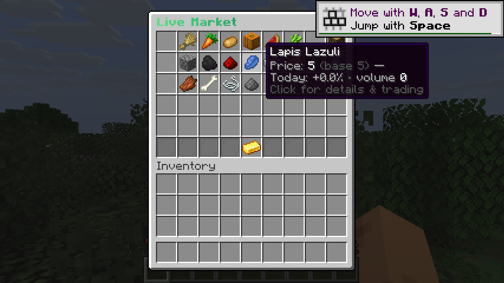
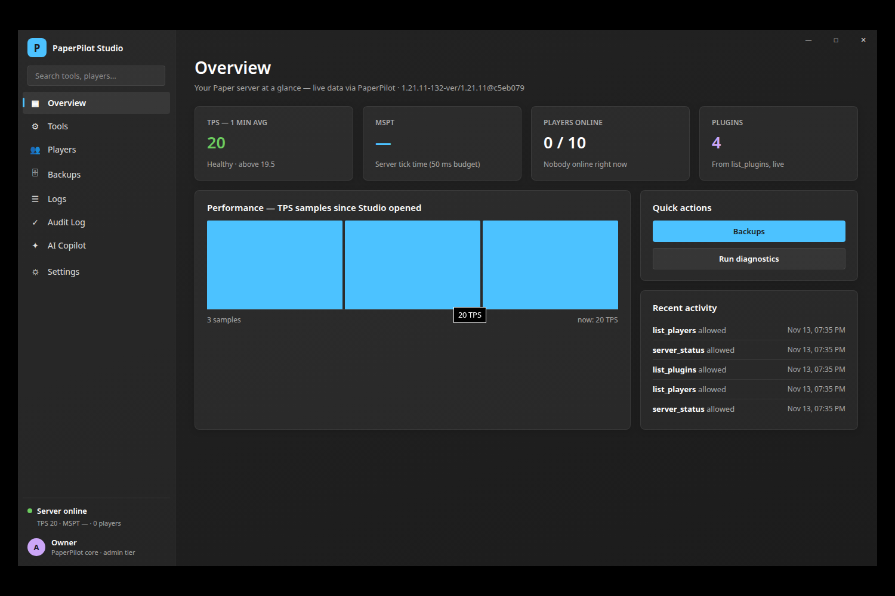
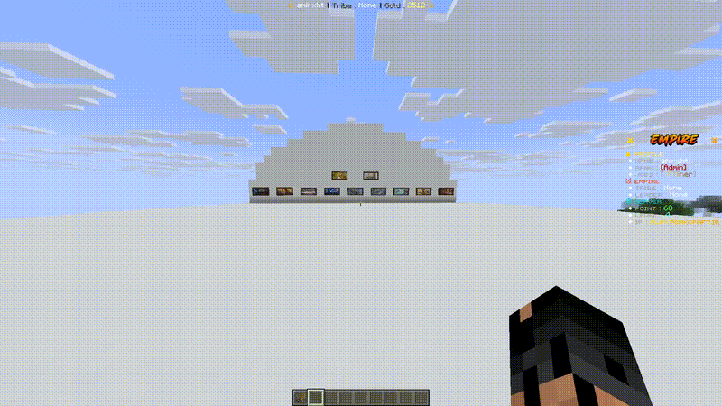

Plugins and tools for Minecraft servers and AI workflows — real software, tested end-to-end, released in the open. No demos, no vaporware.
A living market for survival servers, an AI copilot for Paper servers, and a framework that turns custom models into interactive world objects.

A Paper plugin that turns a server shop into a living market: prices move with real supply and demand, saturate against farming, and drift back to base over time. Chest GUI, price alerts, MiniMessage throughout, PlaceholderAPI support.

An MCP server that lets AI agents run a Paper server safely — tiered tools, a command allowlist and a full audit log — plus Studio, its native Windows app with a Fluent design and a copilot that drafts actions for your approval before running them.

A framework built on BetterModel that turns custom models into interactive Minecraft blocks — animations, interactions and configurable requirements, all defined in YAML. Crates, furniture, machines, doors: if it has a model, it can live in the world.
Everything else lives on GitHub — frameworks, bots and Blockbench tooling.
Discord music bot with session volume control, built for community servers.
Tooling for Blockbench model workflows.
An MCP bridge that lets AI agents work inside Blockbench Desktop.